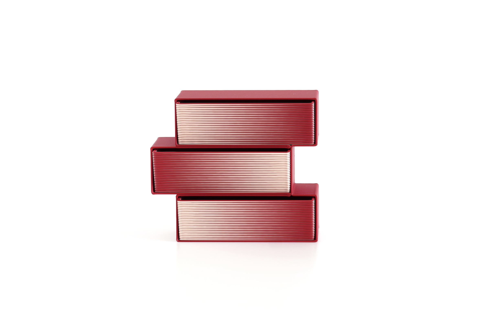
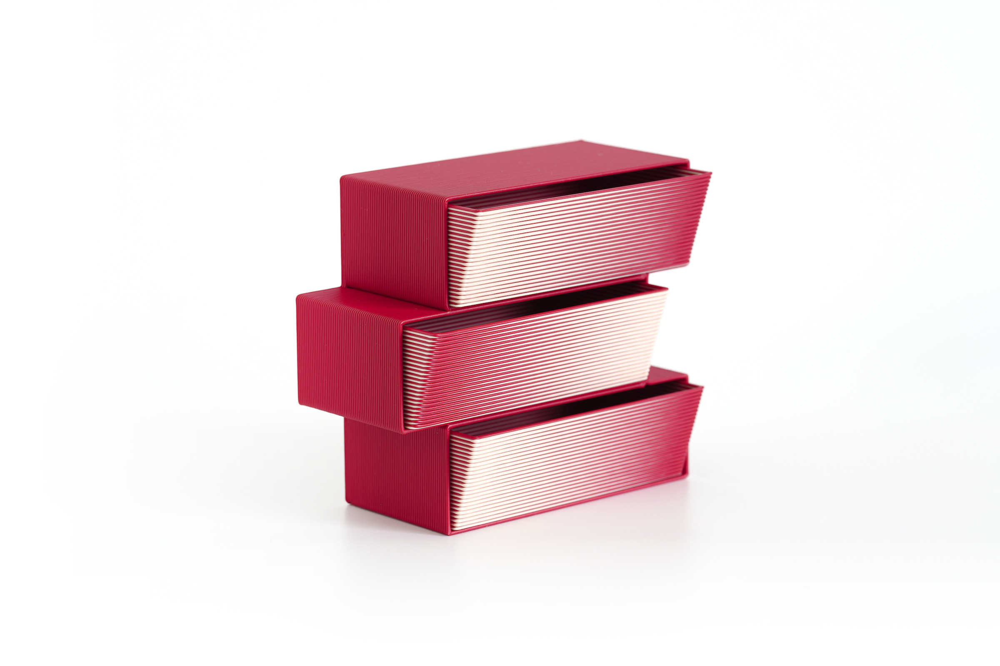
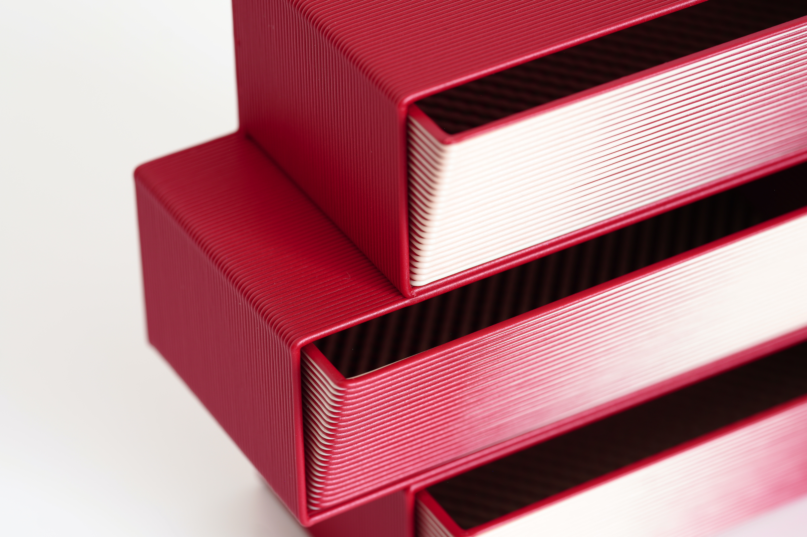
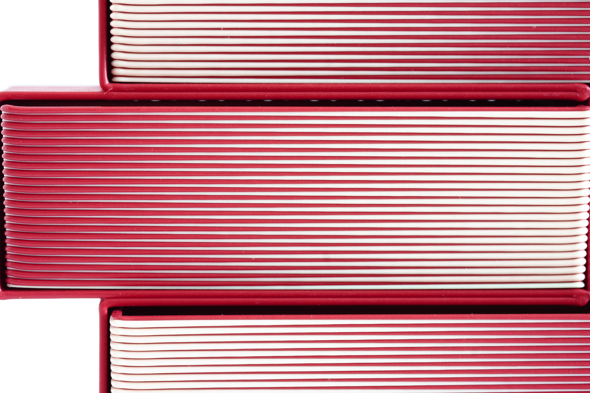

Gradient
Concept
色の切り替わりを積層そのものとして見せるシリーズ。離れて見ると滑らかな色面に、近づくと一本一本のレイヤーに見える、その距離による見え方の変化を楽しむ作品です。A series that makes color transitions visible through the layers themselves. From a distance it reads as a smooth field; up close, individual printed layers emerge.


Technique
レイヤーごとに色の比率や切り替え位置を変え、積層方向にグラデーションを構成。3Dプリントの製造痕を隠さず、グラフィックとして扱っています。Color ratios and transition positions change layer by layer, turning the traces of additive manufacturing into a graphic element.
